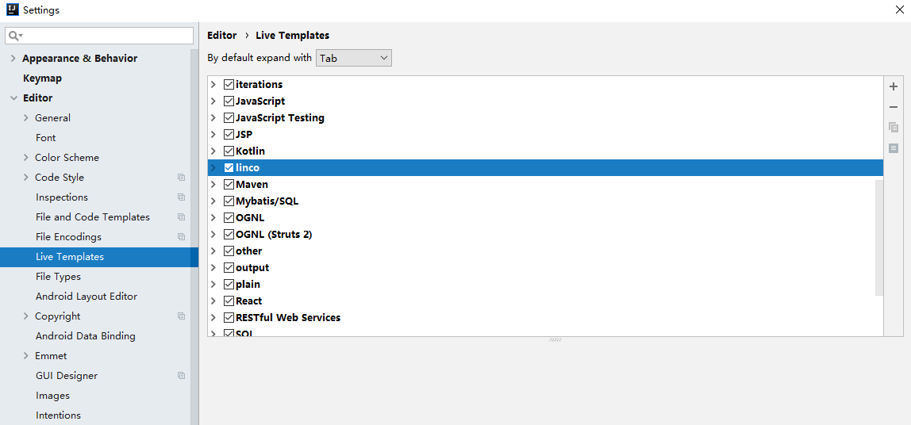
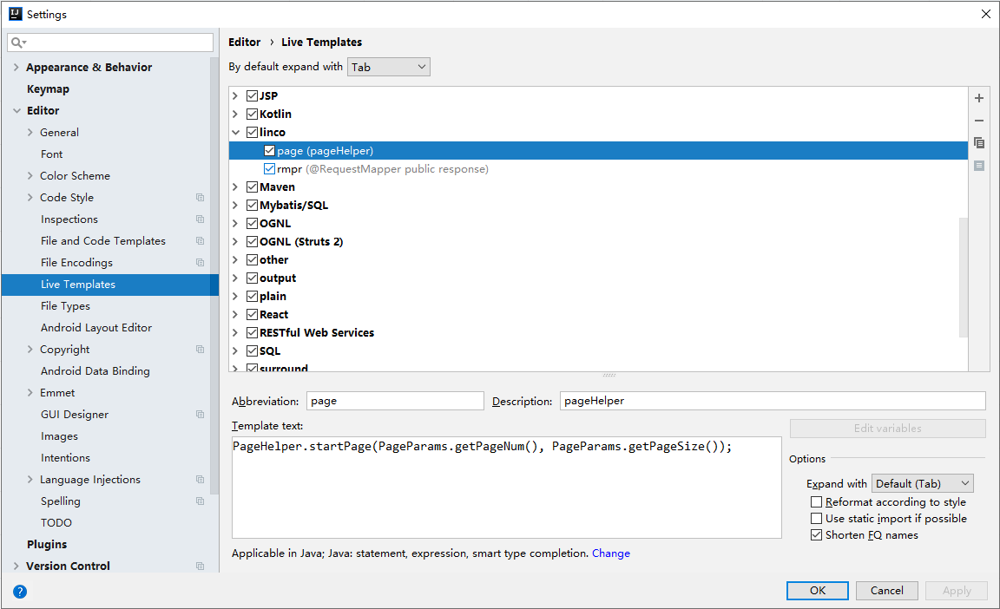
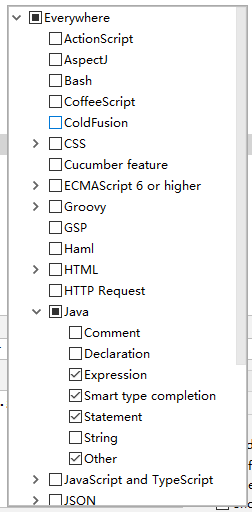
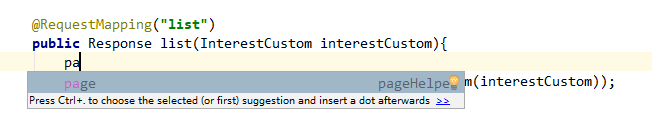
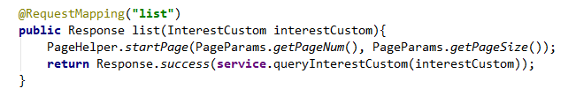

<!DOCTYPE html>
<html lang class="loading">
<head><meta name="generator" content="Hexo 3.8.0">
    <meta charset="UTF-8">
    <meta http-equiv="X-UA-Compatible" content="IE=edge,chrome=1">
    <meta name="viewport" content="width=device-width, minimum-scale=1.0, maximum-scale=1.0, user-scalable=no">
    <title>IDEA 添加快捷语句, 你还可以再懒一点吗 - Linco</title>
    <meta name="apple-mobile-web-app-capable" content="yes">
    <meta name="apple-mobile-web-app-status-bar-style" content="black-translucent">
    <meta name="google" content="notranslate">
    <meta name="keywords" content="Linco, Blog,"> 
    <meta name="description" content="事情是这样的, 去年写了利用 ThreadLocal 保存参数, 不用传参随取随用, 最后举例是PageHelper组件的参数的包装和引用. 经过自动处理后, 只需要一行代码就完成分页查询的操作
1,"> 
    <meta name="author" content="Linco"> 
    <link rel="alternative" href="atom.xml" title="Linco" type="application/atom+xml"> 
    <link rel="icon" href="/img/icon.png"> 
    <link rel="stylesheet" href="//cdn.jsdelivr.net/npm/gitalk@1/dist/gitalk.css">
    <link rel="stylesheet" href="/css/diaspora.css">

</head>
</html>
<body class="loading">
    <span id="config-title" style="display:none">Linco</span>
    <div id="loader"></div>
    <div id="single">
    <div id="top" style="display: block;">
    <div class="bar" style="width: 0;"></div>
    <a class="icon-home image-icon" href="javascript:;" data-url></a>
    <div title="播放/暂停" class="icon-play"></div>
    <h3 class="subtitle">IDEA 添加快捷语句, 你还可以再懒一点吗</h3>
    <div class="social">
        <!--<div class="like-icon">-->
            <!--<a href="javascript:;" class="likeThis active"><span class="icon-like"></span><span class="count">76</span></a>-->
        <!--</div>-->
        <div>
            <div class="share">
                <a title="获取二维码" class="icon-scan" href="javascript:;"></a>
            </div>
            <div id="qr"></div>
        </div>
    </div>
    <div class="scrollbar"></div>
</div>

    <div class="section">
        <div class="article">
    <div class="main">
        <h1 class="title">IDEA 添加快捷语句, 你还可以再懒一点吗</h1>
        <div class="stuff">
            <span>七月 23, 2020</span>
            
  <ul class="post-tags-list"><li class="post-tags-list-item"><a class="post-tags-list-link" href="/tags/小问题/">小问题</a></li></ul>


        </div>
        <div class="content markdown">
            <p>事情是这样的, 去年写了<a href="http://linco.cool/2019/11/11/%E5%88%A9%E7%94%A8ThreadLocal%E4%BF%9D%E5%AD%98%E5%8F%82%E6%95%B0/" target="_blank" rel="noopener">利用 ThreadLocal 保存参数, 不用传参随取随用</a>, 最后举例是<code>PageHelper</code>组件的参数的包装和引用. 经过自动处理后, 只需要一行代码就完成分页查询的操作</p>
<figure class="highlight java"><table><tr><td class="gutter"><pre><span class="line">1</span><br></pre></td><td class="code"><pre><span class="line">PageHelper.startPage(PageParams.getPageNum(), PageParams.getPageSize());</span><br></pre></td></tr></table></figure>
<p>​    </p>
<p>最近开发一个新项目, 上面这段敲了几轮, 感到朴实无华, 且枯燥 —— 别小看这一行, 里面整整72个字符, 包括60个字母和11个标点, 以及最后的换行. 打完这一行代码, 相当于把主键盘所有按键都按了一遍</p>
<p>​    </p>
<p>于是想到IDEA是可以配置快捷短语的</p>
<p><code>file -&gt; setting -&gt; Live template</code></p>
<p>在列表右边<code>+</code> 选择  <code>Template Group...</code> 建立一个新的分组, 方便和系统自带区分开</p>
<p></p>
<p>​    </p>
<p>这里可以看到常用的 <code>psvm</code>, <code>sout</code> 等系统默认语句</p>
<p>​    </p>
<p>点击右上角加号 +, 添加一个自己的配置, 以现在要添加的 pageHelper 语句为例</p>
<p></p>
<p> <code>Abbreviation</code> 是快捷短语, 输入对应短语就可以触发模板的选项</p>
<p><code>Description</code> 不用多说, 备注写着看的</p>
<p><code>Iemplate text</code> 是模板语句, 可以填入用<code>$$</code>包裹的参数, 参数名可以自定, 当填入参数时, <code>Edit variables</code> 按钮转为可用, 点击配置参数的属性, 系统也内置一些参数, 建议查看默认项</p>
<p>​    </p>
<p>右边的 <code>Reformat according to style</code> 可以格式化填入的模板, 推荐勾选</p>
<p><code>Use static import if possible</code> 会改变模板代码静态引入, 建议不选</p>
<p>其他无所谓</p>
<p>​    </p>
<p>填写完成后, 最下面有个警告, 要求选择生效的语言和场景, 点击弹出</p>
<p></p>
<p>​    </p>
<p>我需要配置的pageHelper的快捷语句只用在Java代码, 而且只在方法的语句块中生效, 所以勾选上面几项就行, 其他场景下的代码按需要勾选</p>
<p>​    </p>
<p>保存回到编辑器, 试试效果</p>
<p></p>
<p>输入时快捷语句同步提示, 按<code>enter</code>自动填充</p>
<p></p>

            <!--[if lt IE 9]><script>document.createElement('audio');</script><![endif]-->
            <audio id="audio" loop="1" preload="auto" controls="controls" data-autoplay="true">
                <source type="audio/mpeg" src="/music/big_fish_piano.mp3">
            </audio>
            
        </div>
        
    <div id="gitalk-container" class="comment link" data-ae="false" data-ci="978518cc439cd352dd0b" data-cs="2d89825e7db6df72d065714d6b4ac1ce1829b14e" data-r="LincoXiaoQ.github.io" data-o="LincoXiaoQ" data-a="LincoXiaoQ" data-d="false">查看评论</div>


    </div>
    
</div>


    </div>
</div>
</body>
<script src="//cdn.jsdelivr.net/npm/gitalk@1/dist/gitalk.min.js"></script>
<script src="//lib.baomitu.com/jquery/1.8.3/jquery.min.js"></script>
<script src="/js/plugin.js"></script>
<script src="/js/diaspora.js"></script>
<link rel="stylesheet" href="/photoswipe/photoswipe.css">
<link rel="stylesheet" href="/photoswipe/default-skin/default-skin.css">
<script src="/photoswipe/photoswipe.min.js"></script>
<script src="/photoswipe/photoswipe-ui-default.min.js"></script>

<!-- Root element of PhotoSwipe. Must have class pswp. -->
<div class="pswp" tabindex="-1" role="dialog" aria-hidden="true">
    <!-- Background of PhotoSwipe. 
         It's a separate element as animating opacity is faster than rgba(). -->
    <div class="pswp__bg"></div>
    <!-- Slides wrapper with overflow:hidden. -->
    <div class="pswp__scroll-wrap">
        <!-- Container that holds slides. 
            PhotoSwipe keeps only 3 of them in the DOM to save memory.
            Don't modify these 3 pswp__item elements, data is added later on. -->
        <div class="pswp__container">
            <div class="pswp__item"></div>
            <div class="pswp__item"></div>
            <div class="pswp__item"></div>
        </div>
        <!-- Default (PhotoSwipeUI_Default) interface on top of sliding area. Can be changed. -->
        <div class="pswp__ui pswp__ui--hidden">
            <div class="pswp__top-bar">
                <!--  Controls are self-explanatory. Order can be changed. -->
                <div class="pswp__counter"></div>
                <button class="pswp__button pswp__button--close" title="Close (Esc)"></button>
                <button class="pswp__button pswp__button--share" title="Share"></button>
                <button class="pswp__button pswp__button--fs" title="Toggle fullscreen"></button>
                <button class="pswp__button pswp__button--zoom" title="Zoom in/out"></button>
                <!-- Preloader demo http://codepen.io/dimsemenov/pen/yyBWoR -->
                <!-- element will get class pswp__preloader--active when preloader is running -->
                <div class="pswp__preloader">
                    <div class="pswp__preloader__icn">
                      <div class="pswp__preloader__cut">
                        <div class="pswp__preloader__donut"></div>
                      </div>
                    </div>
                </div>
            </div>
            <div class="pswp__share-modal pswp__share-modal--hidden pswp__single-tap">
                <div class="pswp__share-tooltip"></div> 
            </div>
            <button class="pswp__button pswp__button--arrow--left" title="Previous (arrow left)">
            </button>
            <button class="pswp__button pswp__button--arrow--right" title="Next (arrow right)">
            </button>
            <div class="pswp__caption">
                <div class="pswp__caption__center"></div>
            </div>
        </div>
    </div>
</div>


</html>
